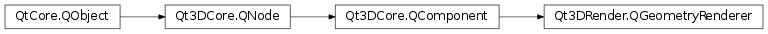

Qt3DRender.QGeometryRenderer¶
Inherited by: Qt3DExtras.QCylinderMesh, Qt3DExtras.QPlaneMesh, Qt3DExtras.QSphereMesh, Qt3DExtras.QExtrudedTextMesh, Qt3DExtras.QTorusMesh, Qt3DRender.QMesh, Qt3DExtras.QConeMesh, Qt3DExtras.QCuboidMesh
Synopsis¶
Functions¶
- def
firstInstance() - def
firstVertex() - def
geometry() - def
geometryFactory() - def
indexBufferByteOffset() - def
indexOffset() - def
instanceCount() - def
primitiveRestartEnabled() - def
primitiveType() - def
restartIndexValue() - def
setGeometryFactory(factory) - def
vertexCount() - def
verticesPerPatch()
Slots¶
- def
setFirstInstance(firstInstance) - def
setFirstVertex(firstVertex) - def
setGeometry(geometry) - def
setIndexBufferByteOffset(offset) - def
setIndexOffset(indexOffset) - def
setInstanceCount(instanceCount) - def
setPrimitiveRestartEnabled(enabled) - def
setPrimitiveType(primitiveType) - def
setRestartIndexValue(index) - def
setVertexCount(vertexCount) - def
setVerticesPerPatch(verticesPerPatch)
Signals¶
- def
firstInstanceChanged(firstInstance) - def
firstVertexChanged(firstVertex) - def
geometryChanged(geometry) - def
indexBufferByteOffsetChanged(offset) - def
indexOffsetChanged(indexOffset) - def
instanceCountChanged(instanceCount) - def
primitiveRestartEnabledChanged(primitiveRestartEnabled) - def
primitiveTypeChanged(primitiveType) - def
restartIndexValueChanged(restartIndexValue) - def
vertexCountChanged(vertexCount) - def
verticesPerPatchChanged(verticesPerPatch)
Detailed Description¶
Encapsulates geometry rendering
A
Qt3DRender.QGeometryRendererholds all the information necessary to draw aQt3DRender.QGeometry. AQGeometryholds the coordinates of the geometry data -QGeometryRendererspecifies how to interpret that data.
-
class
PySide2.Qt3DRender.Qt3DRender.QGeometryRenderer([parent=nullptr])¶ Parameters: parent – PySide2.Qt3DCore.Qt3DCore::QNodeConstructs a new
QGeometryRendererwithparent.
-
PySide2.Qt3DRender.Qt3DRender.QGeometryRenderer.PrimitiveType¶ The type of the primitive.
Constant Description Qt3DRender.QGeometryRenderer.Points List of points Qt3DRender.QGeometryRenderer.Lines List of lines Qt3DRender.QGeometryRenderer.LineLoop Connected group of lines connected at ends forming a loop Qt3DRender.QGeometryRenderer.LineStrip Connected group of lines Qt3DRender.QGeometryRenderer.Triangles List of triangles Qt3DRender.QGeometryRenderer.TriangleStrip List of connected triangles Qt3DRender.QGeometryRenderer.TriangleFan List of connected triagles where all triangles share the first vertex Qt3DRender.QGeometryRenderer.LinesAdjacency Allows geometry shader to access adjacent lines in a line list Qt3DRender.QGeometryRenderer.TrianglesAdjacency Allows geometry shader to access adjacent triangles in a triangle list Qt3DRender.QGeometryRenderer.LineStripAdjacency Allows geometry shader to access adjacent lines in a line strip Qt3DRender.QGeometryRenderer.TriangleStripAdjacency Allows geometry shader to access adjacent triangles in a triangle strip Qt3DRender.QGeometryRenderer.Patches Only primitive type accepted by tesselation shader where a patch consists of arbitrary number of vertices
-
PySide2.Qt3DRender.Qt3DRender.QGeometryRenderer.firstInstance()¶ Return type: PySide2.QtCore.intSee also
PySide2.Qt3DRender.Qt3DRender::QGeometryRenderer.setFirstInstance()
-
PySide2.Qt3DRender.Qt3DRender.QGeometryRenderer.firstInstanceChanged(firstInstance)¶ Parameters: firstInstance – PySide2.QtCore.int
-
PySide2.Qt3DRender.Qt3DRender.QGeometryRenderer.firstVertex()¶ Return type: PySide2.QtCore.intSee also
PySide2.Qt3DRender.Qt3DRender::QGeometryRenderer.setFirstVertex()
-
PySide2.Qt3DRender.Qt3DRender.QGeometryRenderer.firstVertexChanged(firstVertex)¶ Parameters: firstVertex – PySide2.QtCore.int
-
PySide2.Qt3DRender.Qt3DRender.QGeometryRenderer.geometry()¶ Return type: PySide2.Qt3DRender.Qt3DRender::QGeometrySee also
PySide2.Qt3DRender.Qt3DRender::QGeometryRenderer.setGeometry()
-
PySide2.Qt3DRender.Qt3DRender.QGeometryRenderer.geometryChanged(geometry)¶ Parameters: geometry – PySide2.Qt3DRender.Qt3DRender::QGeometry
-
PySide2.Qt3DRender.Qt3DRender.QGeometryRenderer.geometryFactory()¶ Return type: PySide2.QtQuick.QSharedPointerReturns the geometry functor.
See also
PySide2.Qt3DRender.Qt3DRender::QGeometryRenderer.setGeometryFactory()
-
PySide2.Qt3DRender.Qt3DRender.QGeometryRenderer.indexBufferByteOffset()¶ Return type: PySide2.QtCore.intSee also
PySide2.Qt3DRender.Qt3DRender::QGeometryRenderer.setIndexBufferByteOffset()
-
PySide2.Qt3DRender.Qt3DRender.QGeometryRenderer.indexBufferByteOffsetChanged(offset)¶ Parameters: offset – PySide2.QtCore.int
-
PySide2.Qt3DRender.Qt3DRender.QGeometryRenderer.indexOffset()¶ Return type: PySide2.QtCore.intSee also
PySide2.Qt3DRender.Qt3DRender::QGeometryRenderer.setIndexOffset()
-
PySide2.Qt3DRender.Qt3DRender.QGeometryRenderer.indexOffsetChanged(indexOffset)¶ Parameters: indexOffset – PySide2.QtCore.int
-
PySide2.Qt3DRender.Qt3DRender.QGeometryRenderer.instanceCount()¶ Return type: PySide2.QtCore.intSee also
PySide2.Qt3DRender.Qt3DRender::QGeometryRenderer.setInstanceCount()
-
PySide2.Qt3DRender.Qt3DRender.QGeometryRenderer.instanceCountChanged(instanceCount)¶ Parameters: instanceCount – PySide2.QtCore.int
-
PySide2.Qt3DRender.Qt3DRender.QGeometryRenderer.primitiveRestartEnabled()¶ Return type: PySide2.QtCore.boolSee also
PySide2.Qt3DRender.Qt3DRender::QGeometryRenderer.setPrimitiveRestartEnabled()
-
PySide2.Qt3DRender.Qt3DRender.QGeometryRenderer.primitiveRestartEnabledChanged(primitiveRestartEnabled)¶ Parameters: primitiveRestartEnabled – PySide2.QtCore.bool
-
PySide2.Qt3DRender.Qt3DRender.QGeometryRenderer.primitiveType()¶ Return type: PySide2.Qt3DRender.Qt3DRender::QGeometryRenderer.PrimitiveTypeSee also
PySide2.Qt3DRender.Qt3DRender::QGeometryRenderer.setPrimitiveType()
-
PySide2.Qt3DRender.Qt3DRender.QGeometryRenderer.primitiveTypeChanged(primitiveType)¶ Parameters: primitiveType – PySide2.Qt3DRender.Qt3DRender::QGeometryRenderer.PrimitiveType
-
PySide2.Qt3DRender.Qt3DRender.QGeometryRenderer.restartIndexValue()¶ Return type: PySide2.QtCore.intSee also
PySide2.Qt3DRender.Qt3DRender::QGeometryRenderer.setRestartIndexValue()
-
PySide2.Qt3DRender.Qt3DRender.QGeometryRenderer.restartIndexValueChanged(restartIndexValue)¶ Parameters: restartIndexValue – PySide2.QtCore.int
-
PySide2.Qt3DRender.Qt3DRender.QGeometryRenderer.setFirstInstance(firstInstance)¶ Parameters: firstInstance – PySide2.QtCore.intSee also
PySide2.Qt3DRender.Qt3DRender::QGeometryRenderer.firstInstance()
-
PySide2.Qt3DRender.Qt3DRender.QGeometryRenderer.setFirstVertex(firstVertex)¶ Parameters: firstVertex – PySide2.QtCore.intSee also
PySide2.Qt3DRender.Qt3DRender::QGeometryRenderer.firstVertex()
-
PySide2.Qt3DRender.Qt3DRender.QGeometryRenderer.setGeometry(geometry)¶ Parameters: geometry – PySide2.Qt3DRender.Qt3DRender::QGeometrySee also
PySide2.Qt3DRender.Qt3DRender::QGeometryRenderer.geometry()
-
PySide2.Qt3DRender.Qt3DRender.QGeometryRenderer.setGeometryFactory(factory)¶ Parameters: factory – PySide2.QtQuick.QSharedPointerSets the geometry
factory.See also
PySide2.Qt3DRender.Qt3DRender::QGeometryRenderer.geometryFactory()
-
PySide2.Qt3DRender.Qt3DRender.QGeometryRenderer.setIndexBufferByteOffset(offset)¶ Parameters: offset – PySide2.QtCore.intSee also
PySide2.Qt3DRender.Qt3DRender::QGeometryRenderer.indexBufferByteOffset()
-
PySide2.Qt3DRender.Qt3DRender.QGeometryRenderer.setIndexOffset(indexOffset)¶ Parameters: indexOffset – PySide2.QtCore.intSee also
PySide2.Qt3DRender.Qt3DRender::QGeometryRenderer.indexOffset()
-
PySide2.Qt3DRender.Qt3DRender.QGeometryRenderer.setInstanceCount(instanceCount)¶ Parameters: instanceCount – PySide2.QtCore.intSee also
PySide2.Qt3DRender.Qt3DRender::QGeometryRenderer.instanceCount()
-
PySide2.Qt3DRender.Qt3DRender.QGeometryRenderer.setPrimitiveRestartEnabled(enabled)¶ Parameters: enabled – PySide2.QtCore.boolSee also
PySide2.Qt3DRender.Qt3DRender::QGeometryRenderer.primitiveRestartEnabled()
-
PySide2.Qt3DRender.Qt3DRender.QGeometryRenderer.setPrimitiveType(primitiveType)¶ Parameters: primitiveType – PySide2.Qt3DRender.Qt3DRender::QGeometryRenderer.PrimitiveTypeSee also
PySide2.Qt3DRender.Qt3DRender::QGeometryRenderer.primitiveType()
-
PySide2.Qt3DRender.Qt3DRender.QGeometryRenderer.setRestartIndexValue(index)¶ Parameters: index – PySide2.QtCore.intSee also
PySide2.Qt3DRender.Qt3DRender::QGeometryRenderer.restartIndexValue()
-
PySide2.Qt3DRender.Qt3DRender.QGeometryRenderer.setVertexCount(vertexCount)¶ Parameters: vertexCount – PySide2.QtCore.intSee also
PySide2.Qt3DRender.Qt3DRender::QGeometryRenderer.vertexCount()
-
PySide2.Qt3DRender.Qt3DRender.QGeometryRenderer.setVerticesPerPatch(verticesPerPatch)¶ Parameters: verticesPerPatch – PySide2.QtCore.intSee also
PySide2.Qt3DRender.Qt3DRender::QGeometryRenderer.verticesPerPatch()
-
PySide2.Qt3DRender.Qt3DRender.QGeometryRenderer.vertexCount()¶ Return type: PySide2.QtCore.intSee also
PySide2.Qt3DRender.Qt3DRender::QGeometryRenderer.setVertexCount()
-
PySide2.Qt3DRender.Qt3DRender.QGeometryRenderer.vertexCountChanged(vertexCount)¶ Parameters: vertexCount – PySide2.QtCore.int
-
PySide2.Qt3DRender.Qt3DRender.QGeometryRenderer.verticesPerPatch()¶ Return type: PySide2.QtCore.intSee also
PySide2.Qt3DRender.Qt3DRender::QGeometryRenderer.setVerticesPerPatch()
-
PySide2.Qt3DRender.Qt3DRender.QGeometryRenderer.verticesPerPatchChanged(verticesPerPatch)¶ Parameters: verticesPerPatch – PySide2.QtCore.int
© 2018 The Qt Company Ltd. Documentation contributions included herein are the copyrights of their respective owners. The documentation provided herein is licensed under the terms of the GNU Free Documentation License version 1.3 as published by the Free Software Foundation. Qt and respective logos are trademarks of The Qt Company Ltd. in Finland and/or other countries worldwide. All other trademarks are property of their respective owners.